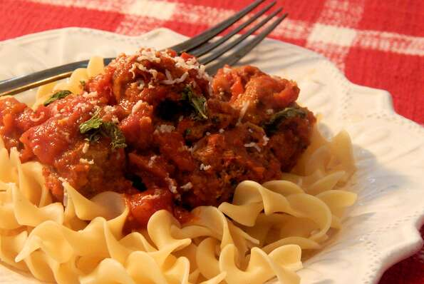

Turkey Meatballs

These slow cooker turkey meatballs in tomato sauce are a great alternative to traditional beef meatballs. Can be served over pasta or make meatball sandwiches with sauteed onions and peppers with melted Italian cheese over the top. Fantastic!
Ingredients
- ¼ cup minced onion
- 1 tablespoon Italian-style salad dressing
- 1 ½ pounds ground turkey
- 1 ¼ cups Italian-seasoned bread crumbs
Steps
- Saute onion and Italian dressing in a small saute pan over medium heat for 5 minutes. Remove from heat and let cool slightly, about 5 minutes.
- Combine turkey, bread crumbs, garlic, sauteed onions, Italian seasoning, salt, and pepper in a bowl; mix well.
- Combine diced tomatoes and marinara in a second bowl; set aside.